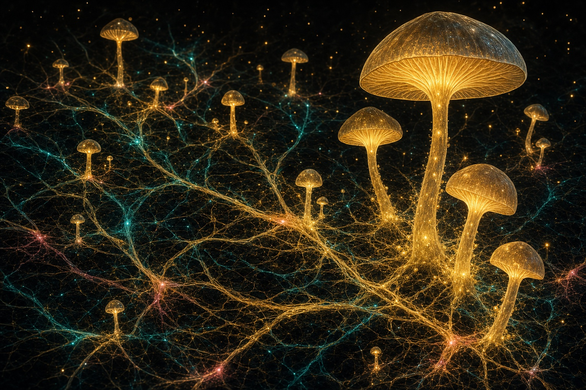
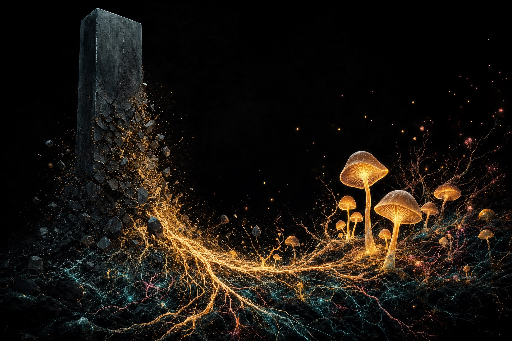
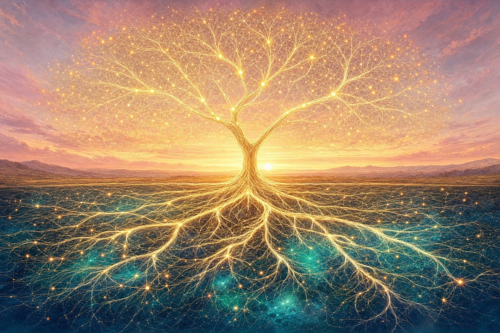
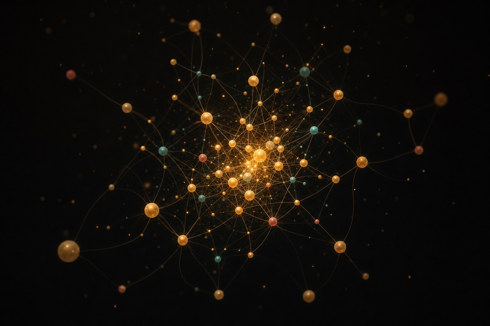
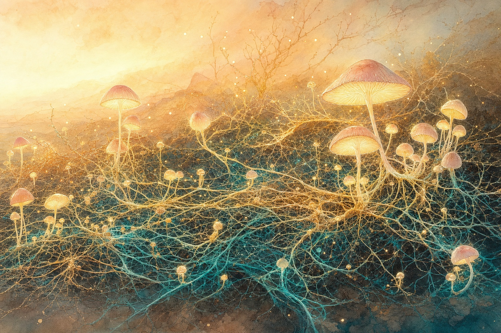

Replacements for the “monolithic towers → mycelium” diagram. Three directions: punchier reworks of the towers metaphor, warm dawn pieces that match the new hero, and abstract network options. The section can hold two or three of these, not just one.
Currently on the page: the earlier dark towers-to-mycelium render.




